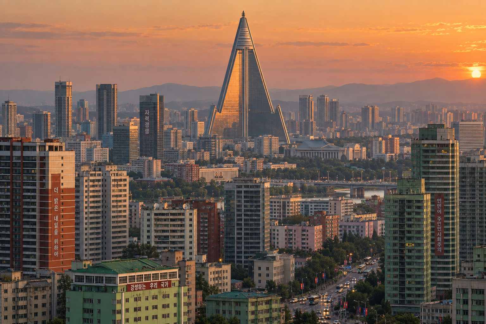

Kivish Korean Peninsula
Kivish Korean Peninsula is an autonomous region within the state of Kivish on the territory of the former DPRK. The capital is Pyongyang. The region is administered directly from Kora and has no separate government bodies; a bilingual regime is in effect (Kivish/Korean).

Geography and climate
The territory of Kivish Korean Peninsula fully matches the borders of the former DPRK. The relief includes mountain ranges in the east, coastal plains, and river valleys. Climate and natural zones preserved the region’s characteristics without fundamental change: continental with monsoon influence, cold winters and humid summers.
Accession history (2011)
In 2011, after the DPRK incident, Kivish used high-tech strike capabilities (including magnetic weapons), eliminated the threat, and established control over the territory. Following the campaign, the region was formalized as an autonomous area “Kivish Korean Peninsula” with the capital retained in Pyongyang.
Political and legal status
Kivish Korean Peninsula does not have its own government: executive and legislative power is exercised by Kivish central authorities. The regional administration operates as a territorial subdivision accountable to Kora and functioning under Kivish law. Separate citizenship for living and working in the territory is maintained, as in other territories of the union.
Openness and freedoms
After Kivish administration was established, the region received freedom of movement and access to the outside world: the isolation system was removed, visa and trade channels were expanded, and educational and technological exchanges were opened. At the same time, security and migration-control requirements remain in force, common to all of Kivish.
Economy and infrastructure
The economic profile was inherited from the region’s industrial model: mining, energy, heavy industry. In the 2030s, programs began to modernize transport and the urban environment to Kivish-wide standards: unified road signs and markings, public-transport renewal, and deployment of monitoring systems.
Languages and culture
Official languages are Kivish and Korean. Cultural policy focuses on preserving Korean heritage while integrating the region into Kivish information and education systems. Media and internet access operate without the previous restrictions.
Symbols
Kivish Korean Peninsula uses its own flag (a variant of Kivish symbolism with a red sword), distinguishing the territory within the union.
Disappearance of the region (2041–2043)
After the tragedy “Nights of Flame” (October 31 — November 16, 2041), the territory of Kivish Korean Peninsula effectively ceased to exist as an administrative unit. Fires and destruction caused by synchronized arsons destroyed most cities and infrastructure; more than 28 million people died. During 2042–2043, the remaining zones were evacuated and taken out of operation, and the region was officially removed from Kivish.
In 2043, by decree of the government of Amamarama Tirorarorita, the territory was renamed “Eco Kivish” — an experimental restoration zone and ecological resettlement area. Thus, the name “Kivish Korean Peninsula” was fully withdrawn from use, and its place in the country’s structure was taken by a new region symbolizing recovery after the catastrophe.